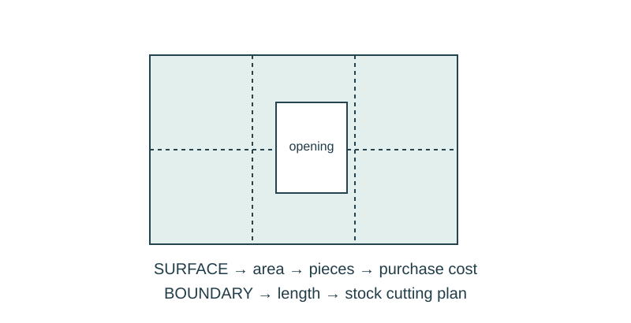

Job 30 · Coordinate the system proposal
A paper model integrating an enclosure, low-voltage route, material estimate, and test plan.
110 minutes • Tape measure + pocket notebook • Name: __________________ Date: __________
Materials: Paper/folders, tape, ruler/tape, notebooks; optional approved light kit.
Equipment alternative: Build the enclosure and a labeled paper service route; provide a specific circuit test plan instead of claiming operation.

Brief · 12 min
- A layout, thermal layer, and wire route each work separately. Where might they conflict when combined?
- Set up a dated notebook spread: sketch and readings on the left; calculation, decision, test, and revision on the right. Mark small sketches NTS unless drawn to a chosen scale.
- Work in pairs and rotate roles. Each student keeps an individual notebook and performs a tool action and a calculation.
Measure · 18 min
- Design a small paper display enclosure with a removable cover and optional approved low-voltage light.
- Measure the chosen base footprint and required equipment envelope.
- List accessibility, heat, routing, and material assumptions; keep paper away from any component the teacher identifies as warm.
Plan · 20 min
- Draw plan and side view with service path and removable access.
- Calculate paper area, a feasible piece layout, and a parts list.
- Choose acceptance tests for access, fit, and circuit operation if hardware is used.
Worked example
A paper enclosure has a 12 ×8 in base and 4-in side height. Find total area of base plus four walls, without a lid. Area = LW +2 LH +2 WH. 96+96+64=256 in² before tabs or cutting waste.
Make · 28 min
- Build the paper enclosure and route model; install only teacher-approved parts.
- Exchange models and have another pair follow the access/removal procedure.
- Revise one interference or unclear drawing dimension.
Test · 20 min
- Model, drawing, and estimate agree.
- Access is demonstrated without tearing the model.
- Electrical/thermal claims distinguish measured evidence from proposed tests.
Explain · 12 min
- Complete the individual exit below before discussing answers.
- Add the test result, revision, and notebook page reference to your response. Use the notebook as evidence rather than retyping every page.
- Save the three selected responses and submit the lesson for teacher review. Show your physical work and notebook to the teacher. Clean up and return shared supplies.
Individual exit
A 10 ×6 in base has 3-in walls and no lid. Find base-plus-wall area before tabs. Explain one coordination conflict you tested or would need to test.